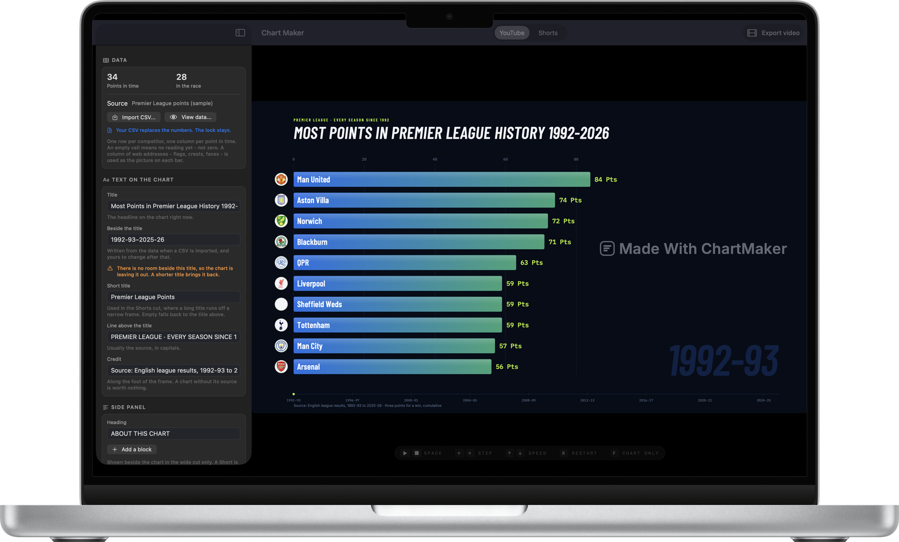

How to make a bar chart race video
Four steps, from a spreadsheet to a finished MP4. No code, no After Effects, no account.
A bar chart race is an animated ranking: one bar per competitor, sorted by value, re-ordering itself as it moves through time. The animation is the easy part. What separates a video people watch from one they scroll past is the look, the pace, and whether the data was read correctly.
1. Get the data into the right shape
Almost every bar chart race starts from the same table: one row per competitor, one column per point in time.
| Nation | ISO2 | 1924 | 1928 | 1932 |
|---|---|---|---|---|
| United States | us | 1 | 2 | 4 |
| Norway | no | 3 | 5 | |
| Austria | at | 3 | 3 | 3 |
Two rules save most of the grief. First, an empty cell is not a zero. Before a nation has won anything it has no reading; drawing that as a zero parks its bar on the baseline from the first frame, visibly losing a race it had not entered. Second, decide whether your figures are cumulative. A running total only ever grows and reads as accumulation; a per-period figure goes up and down and reads as form.
2. Start from a look that already works
Open Chart Maker and pick one of the three templates. Each is a chart with published videos behind it, not a theme somebody guessed at: a dark ground with round flags for countries, a white ground for company logos, and a navy scoreboard for football. The template decides the typography, the colour treatment and the pace all at once.

3. Import your CSV — the look stays
Press Import CSV in the sidebar. Your numbers replace the template’s and nothing about the styling moves. The app reports what it read: how many competitors, how many points in time, and which of your columns it took for the name, the picture, the flag code and the group.
Check this before you export
A race that looks wrong is almost always a file that was read differently than it was meant — a column taken for a year, a decimal comma read as a thousands separator. None of that is visible in the chart, where it looks like history. It is obvious in the data table.
4. Make it yours, then export
Set the title, the line above it (usually the source, in capitals) and the credit along the foot — a chart without its source is worth nothing. Drag the pace slider until the finished length looks right; the runtime updates as you drag. Then press Export video and choose the shape: 16:9 for YouTube, 9:16 for Shorts, TikTok and Reels.
How long does it take?
The first video takes about ten minutes, most of it spent on the data. After that, a new race from a clean spreadsheet is a two-minute job: import, retitle, export.
Questions
Do I need any video editing software?
No. The app writes a finished MP4. You only need an editor if you want to add music or a voice-over afterwards.
How long should a bar chart race video be?
Most published ones run between one and three minutes. The pace slider shows the finished length as you drag it, so you can aim at a number rather than guess.
Make one from your own data
A native Mac app. Free to download, free to export at full resolution, one payment to remove the mark.
Download on the App Store